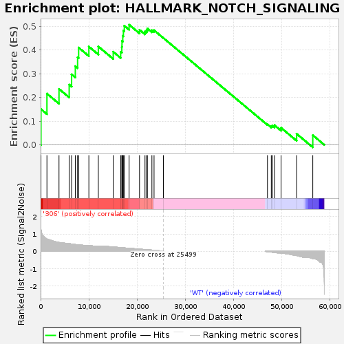
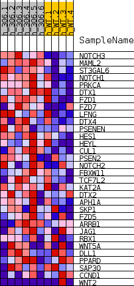
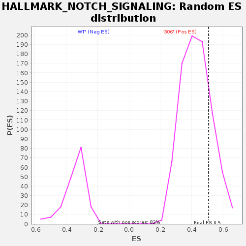

| | | Dataset | 306_WT_express.306_WT.cls#306_versus_WT |
| Phenotype | 306_WT.cls#306_versus_WT |
| Upregulated in class | 306 |
| GeneSet | HALLMARK_NOTCH_SIGNALING |
| Enrichment Score (ES) | 0.5072229 |
| Normalized Enrichment Score (NES) | 1.1846497 |
| Nominal p-value | 0.20194647 |
| FDR q-value | 0.47462338 |
| FWER p-Value | 0.998 |
Table: GSEA Results Summary

Fig 1: Enrichment plot: HALLMARK_NOTCH_SIGNALING
Profile of the Running ES Score & Positions of GeneSet Members on the Rank Ordered List
| SYMBOL | TITLE | RANK IN GENE LIST | RANK METRIC SCORE | RUNNING ES | CORE ENRICHMENT | | 1 | NOTCH3 | NNN | 81 | 1.243 | 0.1507 | Yes |
| 2 | MAML2 | NNN | 1315 | 0.707 | 0.2163 | Yes |
| 3 | ST3GAL6 | NNN | 3817 | 0.509 | 0.2360 | Yes |
| 4 | NOTCH1 | NNN | 5928 | 0.443 | 0.2544 | Yes |
| 5 | PRKCA | NNN | 6428 | 0.421 | 0.2974 | Yes |
| 6 | DTX1 | NNN | 7198 | 0.390 | 0.3321 | Yes |
| 7 | FZD1 | NNN | 7672 | 0.372 | 0.3696 | Yes |
| 8 | FZD7 | NNN | 7890 | 0.365 | 0.4106 | Yes |
| 9 | LFNG | NNN | 10010 | 0.328 | 0.4147 | Yes |
| 10 | DTX4 | NNN | 11973 | 0.276 | 0.4152 | Yes |
| 11 | PSENEN | NNN | 15059 | 0.248 | 0.3930 | Yes |
| 12 | HES1 | NNN | 16606 | 0.212 | 0.3927 | Yes |
| 13 | HEYL | NNN | 16846 | 0.206 | 0.4139 | Yes |
| 14 | CUL1 | NNN | 16879 | 0.205 | 0.4384 | Yes |
| 15 | PSEN2 | NNN | 17040 | 0.201 | 0.4603 | Yes |
| 16 | NOTCH2 | NNN | 17170 | 0.197 | 0.4823 | Yes |
| 17 | FBXW11 | NNN | 17357 | 0.194 | 0.5028 | Yes |
| 18 | TCF7L2 | NNN | 18354 | 0.174 | 0.5072 | Yes |
| 19 | KAT2A | NNN | 20513 | 0.124 | 0.4857 | No |
| 20 | DTX2 | NNN | 21647 | 0.097 | 0.4783 | No |
| 21 | APH1A | NNN | 21972 | 0.090 | 0.4839 | No |
| 22 | SKP1 | NNN | 22145 | 0.085 | 0.4914 | No |
| 23 | FZD5 | NNN | 23081 | 0.067 | 0.4837 | No |
| 24 | ARRB1 | NNN | 23526 | 0.061 | 0.4837 | No |
| 25 | JAG1 | NNN | 25467 | 0.002 | 0.4509 | No |
| 26 | RBX1 | NNN | 47040 | -0.021 | 0.0866 | No |
| 27 | WNT5A | NNN | 47837 | -0.047 | 0.0788 | No |
| 28 | DLL1 | NNN | 48043 | -0.054 | 0.0819 | No |
| 29 | PPARD | NNN | 48507 | -0.072 | 0.0828 | No |
| 30 | SAP30 | NNN | 49863 | -0.100 | 0.0719 | No |
| 31 | CCND1 | NNN | 53091 | -0.241 | 0.0466 | No |
| 32 | WNT2 | NNN | 56440 | -0.417 | 0.0406 | No |
Table: GSEA details [plain text format]

Fig 2: HALLMARK_NOTCH_SIGNALING
Blue-Pink O' Gram in the Space of the Analyzed GeneSet

Fig 3: HALLMARK_NOTCH_SIGNALING: Random ES distribution
Gene set null distribution of ES for HALLMARK_NOTCH_SIGNALING